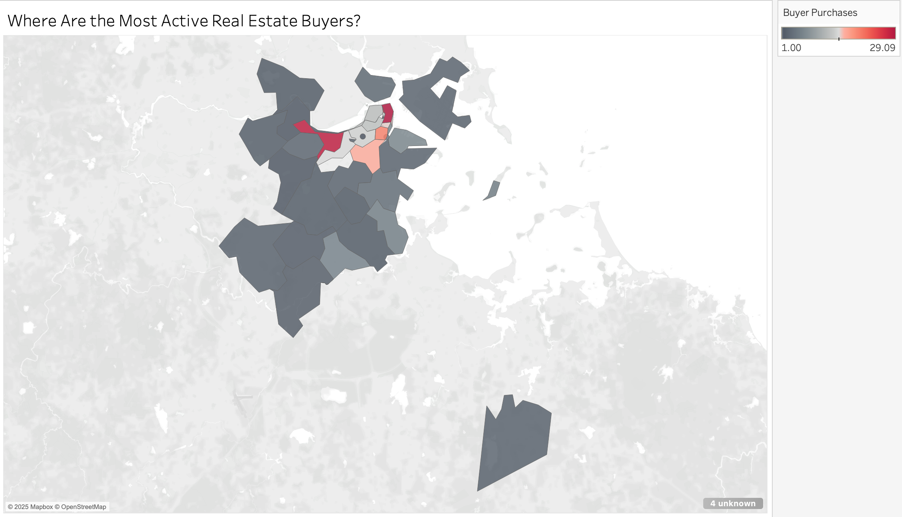
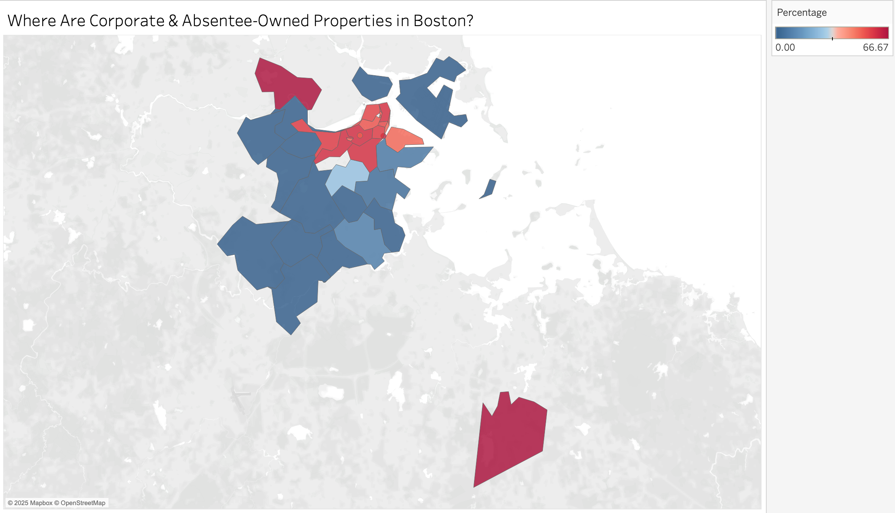
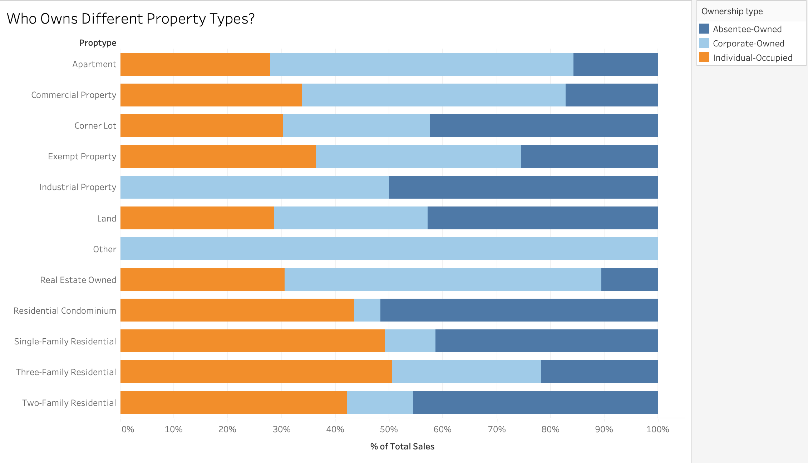
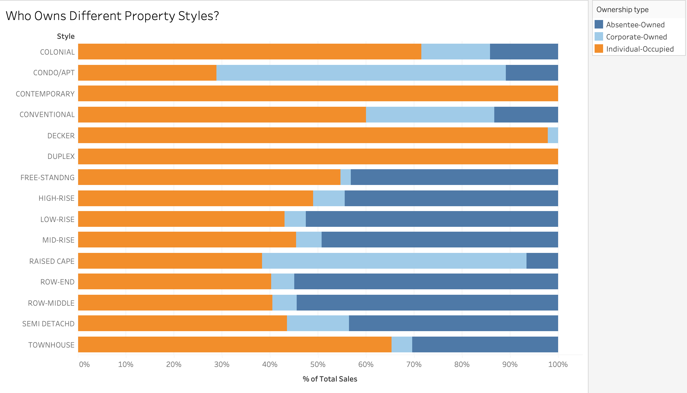
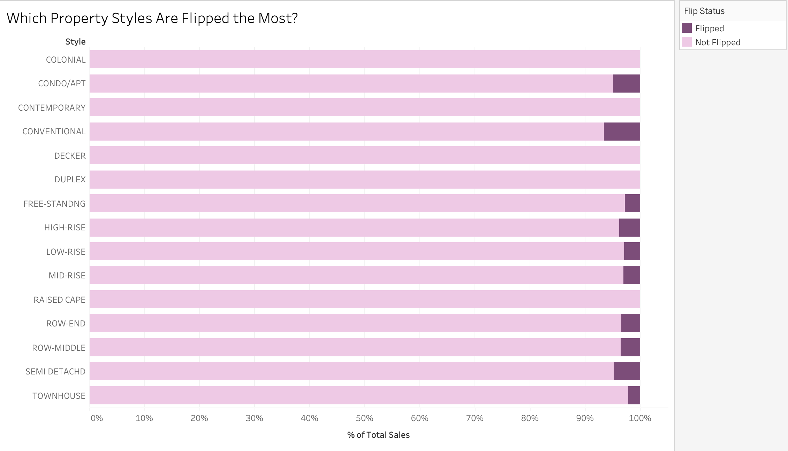
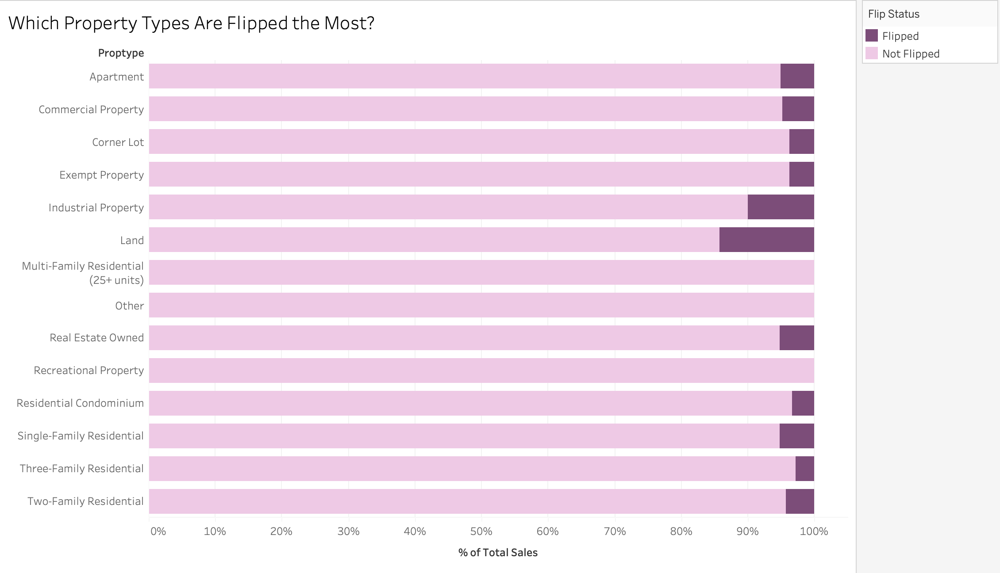
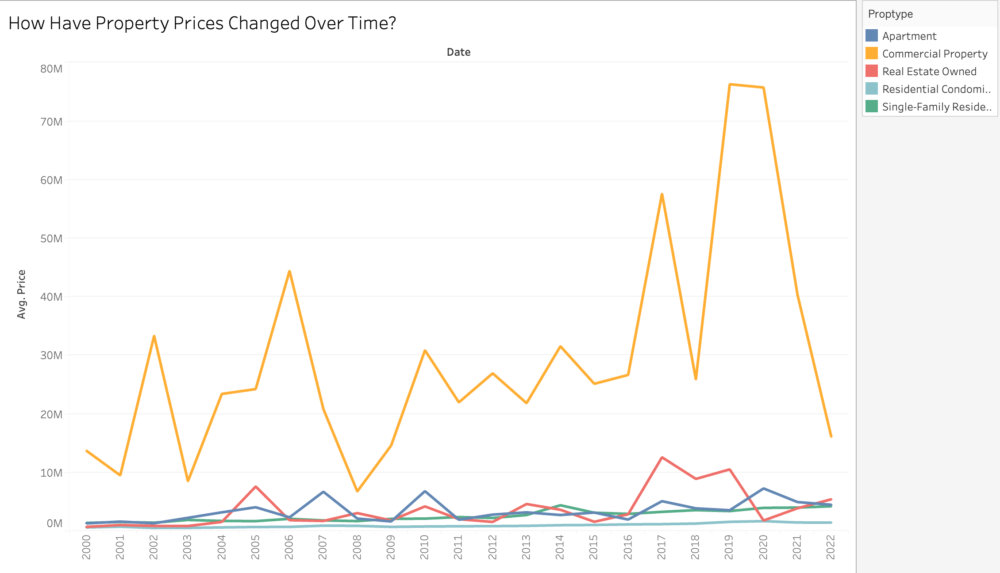
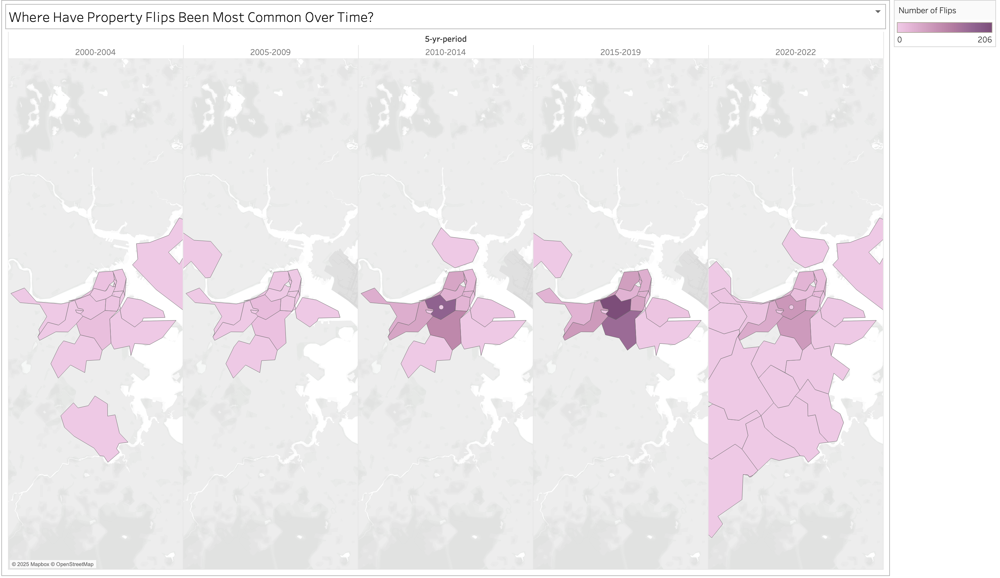
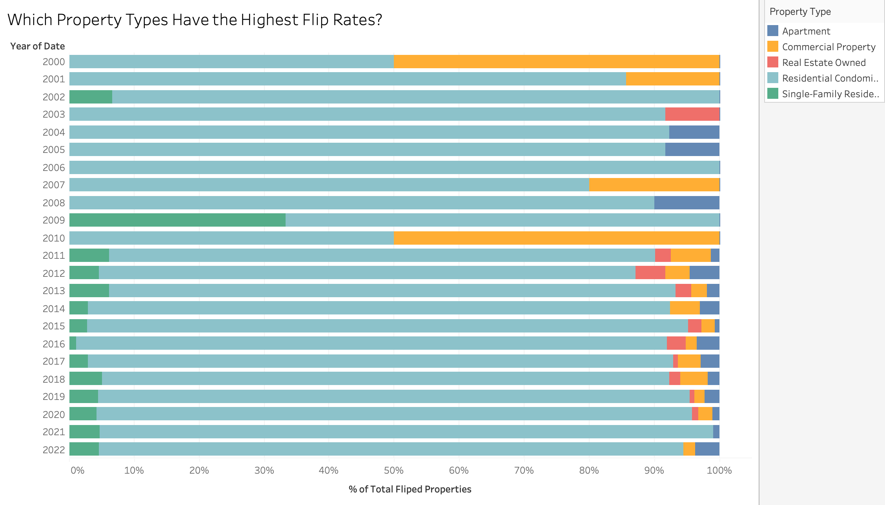
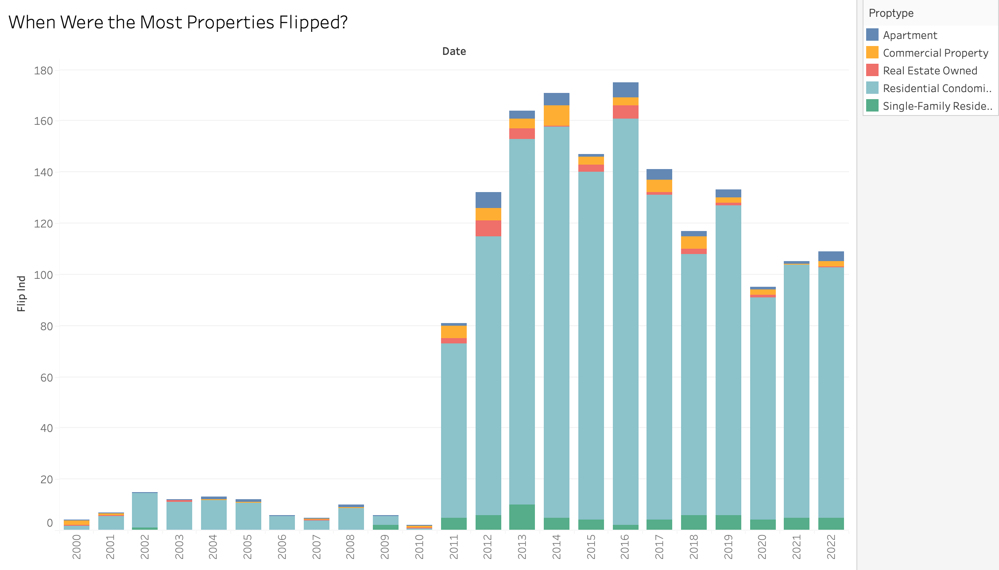

Dataset: Residential sales data in the City of Boston, 2000-2023
The dataset contains information on residential property sales in Boston
from 2000 to 2023. It includes details on sale prices, buyer and seller
types, property characteristics, and whether a sale qualifies as a flip.
Overall Analysis Questions
Where is investor activity most concentrated?
The MAPC report shows how corporate and absentee buyers tend to cluster
in certain areas, pushing up prices and making it harder for long-term
residents to stay. I want to map out where this is happening in Boston
and see if these hotspots line up with rising costs and displacement.
How does ownership structure vary by property type and style?
The “Reckoning with Boston’s Towers of Wealth” article points to
high-rise condos and multi-family properties as prime targets for
investors. I want to see if that holds true in Boston.
What kinds of properties are flipped the most?
ProPublica’s research on private equity in real estate suggests that
investors focus on properties that can be quickly renovated and resold
for a high profit. I want to find out which property types in Boston are
most frequently flipped and whether that’s making certain segments of
the market less affordable.
How have property prices evolved over time?
The MAPC report suggests that investor-heavy areas tend to see faster
price spikes, making housing less accessible. I want to track how
property values have changed over time and whether areas with lots of
speculation have experienced sharper increases compared to other parts
of the city.
When and where has flipping been most intense?
After the 2008 financial crisis, investor activity surged as distressed
properties became easy targets. I want to see when and where flipping
has been the most common in Boston, whether certain neighborhoods have
been repeatedly targeted, and how these trends align with broader market
shifts.
Discoveries & Insights
Before diving into speculation trends, I first need to understand the
shape and structure of the dataset. I started by mapping out where
investor activity is concentrated and then drilled down into ownership
trends, flipping patterns, and how these dynamics have shaped property
prices in Boston over time.

One of the biggest questions I had going into this analysis was
whether investor activity is concentrated in certain areas and if
those areas align with rising costs and displacement risks. To get a
sense of where real estate activity is happening, I mapped the
density of property transactions across Boston. The reder areas show
neighborhoods where properties are changing hands the most, but this
alone doesn’t tell the whole story. High transaction volume could
mean strong demand from residents, or it could point to
investor-driven turnover that might be pushing up prices and
reducing housing stability.

To dig deeper, I looked at corporate and absentee
ownership—properties owned by investors, landlords, or non-resident
buyers. The second map makes it clear: investor activity is heavily
concentrated downtown and in transit-accessible areas. This makes
sense since these locations promise high rental demand and strong
price appreciation, making them attractive to investors. But this
also raises concerns. In other cities, corporate ownership has been
linked to rising rents and lower homeownership rates, and Boston may
be following the same path. If corporate investors continue to
dominate these areas, affordability could become an even bigger
issue, especially for renters and first-time buyers trying to enter
the market.

After identifying where investors are most active, I wanted to see
what types of properties they’re targeting. This chart breaks down
ownership by property type, and the pattern is clear—apartments and
commercial properties are overwhelmingly investor-owned, while
single-family homes are still mostly owned by individuals. Investors
tend to go after multi-unit properties because they generate rental
income and allow for greater scalability, while single-family homes
are more often purchased as primary residences. This suggests that
much of Boston’s rental housing stock is controlled by corporate
owners, which could make it harder for local buyers to find
affordable housing options.

The next chart looks at ownership by architectural style, and it
reinforces this trend. High-rise and contemporary buildings are
mostly investor-owned, while older styles like Colonials and
Duplexes remain largely in the hands of individuals. This tells me
that investors are especially interested in newer developments,
particularly condos, which are often marketed as investment-friendly
assets rather than primary residences. If this trend continues,
Boston’s new housing stock could be shaped more by investor
priorities than by the needs of long-term residents.

Flipping is one of the clearest signs of short-term speculation, so
I wanted to see which property types and styles are flipped the
most. This chart shows that townhouses, rowhouses, and duplexes have
the highest flip rates, which makes sense—these properties tend to
be older, relatively easy to renovate, and located in desirable
neighborhoods. There’s also noticeable flipping in condos and
apartments, meaning speculation isn’t limited to single-family
homes; investors are active in multi-unit properties as well.

The next chart breaks down flipping by property type, and what
stands out is that land and industrial properties have the highest
flip rates. This suggests that some investors aren’t just focused on
renovating and reselling homes—they’re also betting on redevelopment
opportunities. On the other hand, flipping rates for single-family
homes, multi-family buildings, and commercial properties are
relatively low, likely because these properties are more valuable as
long-term rental assets than as quick-flip investments.

Another key concern in this analysis is whether investor activity
has contributed to rising housing costs. The multi-line chart
reveals a consistent upward trend in property prices for highly
flipped property types, with significant spikes around 2006–2007 and
2019–2020. These surges coincide with major economic shifts, such as
the pre-financial crisis and pre-pandemic periods, when changes in
lending policies and broader economic conditions made it easier for
investors to enter the market. In future research, I plan to further
examine flipping activity across different variables to better
understand its correlation with these price spikes.

To analyze how flipping patterns have evolved over time, I mapped
its concentration across five-year periods. In the early years
(2000–2004), flipping activity was scattered and relatively diffuse.
However, between 2010 and 2015, it became highly concentrated in
specific neighborhoods, particularly in the city's dominant real
estate markets. This trend aligns with the post-2008 financial
crisis recovery, when investors capitalized on distressed
properties, renovating and reselling them for profit.

This chart illustrates the distribution of flipped properties by
type over time. One striking observation is the spike in
single-family residences flipping in 2009, likely a response to the
aftermath of the 2008 financial crisis. Another key trend is the
significant rise in commercial property flips in 2010, which may
indicate a shift in investor focus toward income-generating assets
during the early recovery phase. Over the years, residential
condominiums and apartments have remained a steady presence in the
flipping market, suggesting that multi-unit properties continue to
attract investor interest.

This graph shows the total number of flipped properties per year.
Flipping remained relatively low before 2010, but there was a sharp
surge beginning in 2011, peaking between 2013 and 2015. This spike
aligns with the post-2008 recovery period when investors capitalized
on low property prices and favorable market conditions. After 2016,
flipping activity gradually declined but remained significant,
showing a resurgence in 2021 and 2022, possibly driven by market
shifts following the COVID-19 pandemic. The dominance of residential
condominiums in flipping trends suggests that multi-unit properties
have consistently been a key target for investors.
Summary
This report analyzes Boston's residential property sales from 2000 to
2023, using visualizations to examine investor activity, ownership
structures, flipping trends, and price changes. Findings show that
corporate and absentee ownership is concentrated in downtown and
transit-accessible areas, driving up prices and reducing
affordability. Investors primarily target high-rise condos and
multi-family properties, while single-family homes remain largely
individually owned. Flipping is most common in townhouses, rowhouses,
and duplexes, with notable speculation in condos. Prices have steadily
risen, with spikes in 2013–2014 and 2019–2020 aligning with investor
activity. Flipping peaked post-2008 before declining but remains a
market force. The analysis highlights investor-driven speculation as a
key factor in price volatility and housing instability.